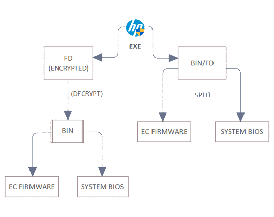
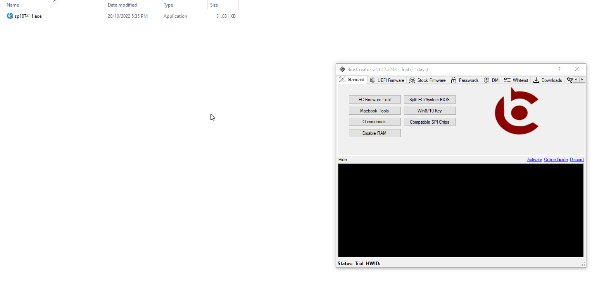

<style>
    .center {
        display: block;
        margin-left: auto;
        margin-right: auto;
        width: 50%;
      }

    a {
      text-decoration: none;
      display: inline-block;
      padding: 8px 16px;
    }
    
    a:hover {
      background-color: #ddd;
      color: black;
    }
    
    .previous {
      background-color: #f1f1f1;
      color: black;
    }
    
    .next {
      background-color: #160042;
      color: white;
    }
    </style>

<section class="support section bg-gray">
	<div class="container">
    <div class="container" style="text-align:justify; margin-bottom:50px;">
      <h4 class="join">Acer</h4>
      <p>The general procedure for creating stock firmware is to download from HP website directly. Once downloaded, BiosExtractor can be used to create stock firmware.</p>
	<p>HP BIOS update is normally in self-extracting EXE file when downloaded. Even if you can successfully extract it using conventional decompression software, the resulting firmware file is encrypted. Creating stock firmware for HP laptops mostly follow the process in the next section.</p>
	<p>Newer HP Bios Update Utilities gives you the option to create stock firmware or create crisis disk recovery which you can use to recover corrupted system bios. A flowchart is shown below as a guide for extracting HP firmwares.</p>
        
	    
    <h2>General Procedure</h2>
        <ol>
        <li>Download BIOS update utility from HP Website</li>
	<li>Extract the downloaded EXE file using BiosExtractor or other decompression tool</li>
	<li>Decrypt the firmware using BIOSCreator.</li>
	<li>Verify that the decrypted firmware has the correct file size.</li>
	<li>If the firmware does not have the correct file size, continue processing the file by splitting the firmware into EC and System BIOS.</li>
	<li>Verify the BID# to make sure one of the decrypted firmware is compatible with your laptop</li>
	</li>Copy the DMI info from the old dump to the stock firmware.</li>
        </ol>
<br>
        <h2>Example</h2>
        <p>Example 1 - HP Pavilion 14-AC137TX</p>
	<p>Perform the firmware extraction similar to the process below. After the extraction process is completed, identify the BID# of the old fimrware dump to check which of the extracted firmware is exactly matched with your firmware dump.</p>
        

        <p>Example 2 - HP Notebook 14-DQ1037WM</p>
	<p>Firmware extraction for this model is now working and available on version 2.1.3, and it is a fixed issue from version 2.1.2 .</p>
        

    <a href="{{ site.baseurl }}/stock-firmware/acer" class="previous">&laquo; Previous</a>
    <a href="{{ site.baseurl }}/stock-firmware/lenovo" class="next">Next &raquo;</a>

		</div> <!-- End row -->
	</div> <!-- End container -->
</section> <!-- End section -->
